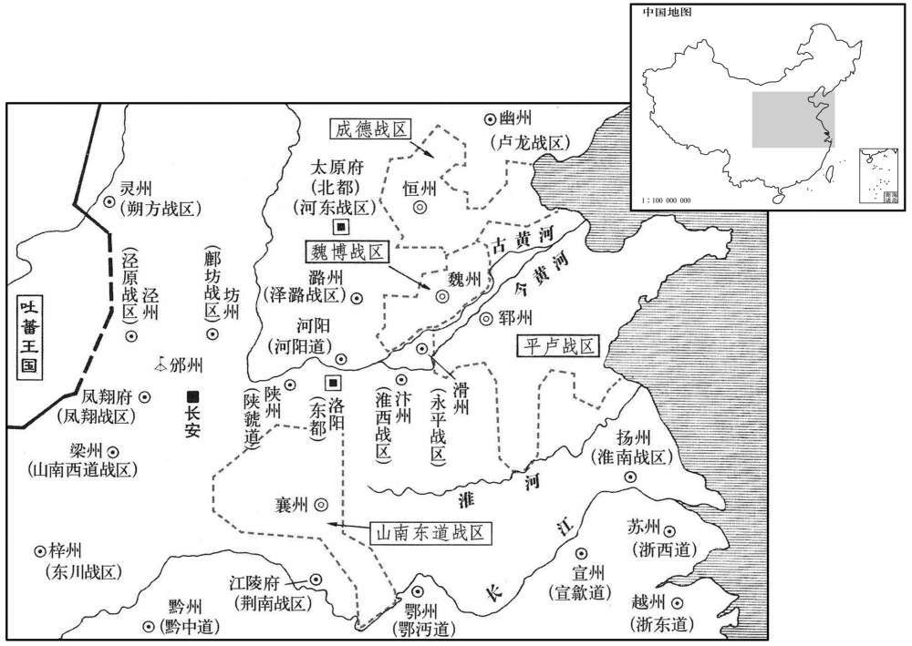

公元777年资治通鉴：本年记事、原文与白话对照
按原书编年位置阅读；追叙和史论不等于本年发生的事件。白话采用所据译本，缺译不以生成译文补齐。
卷225 · 本年记事
公元777年 · 唐代宗睿文孝武皇帝大历十二年
十二年〔（丁巳、七七七）〕
本年事件索引（现代整理）
- 李抱玉去世，李抱真留镇泽潞
- 代宗任鲍防为河东节度使
- 田承嗣再次拒绝入朝，代宗恢复其官爵
- 元载、王缙长期专权并纵容亲属受贿
- 代宗密令吴凑逮捕元载、王缙，元载被赐死
- 代宗任杨绾、常衮为宰相，朝野称庆
- 元载党羽杨炎、韩洄等遭贬官
- 崔宁击败进犯黎州、雅州的吐蕃军
- 元载厚外官薄京官，代宗下诏增加京官俸禄
- 代宗裁撤各州团练守捉使并整顿兵额、官俸
- 代宗命人毁掘元载祖坟，卓英倩等受杖刑
- 杨绾去世，代宗悲叹失去治国贤臣
- 代宗赐东川节度使鲜于叔明李姓
- 常衮、朱泚请求停止宰相所受御膳赏赐
- 司马光称赞常衮辞禄有廉耻
- 杨绾、常衮荐举颜真卿与关播
- 段秀实出任泾原、四镇北庭等军节度使
- 吐蕃进犯原州并攻入方渠，郭子仪遣将救援
- 崔宁在望汉城大破吐蕃
- 韩滉称雨水未损盐池，代宗派蒋镇查验
- 吐蕃进犯盐州、夏州、长武，郭子仪派军抵御
- 代宗任刘洽为宋州刺史并将宋、泗划归永平军
- 御史查明秋雨损坏田地，代宗惩处谎报官员
- 张献恭在岷州击败吐蕃
- 蒋镇称池盐确为瑞盐，朝廷赐名宝应灵应池
- 朱泚自泾州返回京师
- 崔宁奏称再破吐蕃十余万人
- 代宗任朱泚兼陇右节度使
- 李正己扩张领地并迁镇郓州，藩镇各自割据

本年形势与背景参考图
春，三月，乙卯，兵部尚书、同平章事、凤翔、怀泽潞、秦陇节度使李抱玉薨，〔尚，辰羊翻。〕弟抱真仍领怀泽潞留后。
春季，三月乙卯（初三），兵部尚书、同平章事及凤翔、怀泽潞、秦陇节度使李抱玉去世，弟弟李抱真仍兼任怀泽潞留后。
癸亥，以河东行军司马鲍防为河东节度使。防，襄州人也。
癸亥（十一日），代宗任命河东行军司马鲍防为河东节度使。鲍防是襄州人。
田承嗣竟不入朝，又助李灵曜，上复命讨之。承嗣乃复上表谢罪。〔嗣，祥吏翻。朝，直遥翻。复，扶又翻。上，时掌翻。〕上亦无如之何，庚午，悉复承嗣官爵，仍令不必入朝。〔令，力丁翻。〕
田承嗣始终没有入朝，又帮助李灵曜，代宗再次命令讨伐他。田承嗣便再次上表谢罪。代宗也对他无可奈何，庚午（十八日），恢复田承嗣的全部官爵，还命令他不必入朝。
中书侍郎、同平章事元载专横，〔载，祖亥翻，又音如字。横，户孟翻。〕黄门侍郎、同平章事王缙附之，二人俱贪。载妻王氏〔载妻，王忠嗣之女。缙，音晋。〕及子伯和、仲武、缙弟、妹及尼出入者，争纳贿赂。〔尼，女夷翻。〕又以政事委群吏，士之求进者，不结其子弟及主书卓英倩等，无由自达。上含容累年，载、缙不悛。〔悛，丑缘翻。〕
中书侍郎、同平章事元载十分专横，黄门侍郎、同平章事王缙依附元载，二人都很贪婪。元载的妻子王氏和儿子元伯和、元仲武，王缙的弟弟、妹妹和出入王门的尼姑，都争相收纳贿赂。元载、王缙又将政务委托官吏们办理，求取功名的士人，如果不巴结他们的子弟和主书卓英倩等人，就无法进入仕途。代宗多年来包涵宽容，但元载、王缙仍不悔改。
上欲诛之，恐左右漏泄，无可与言者，独与左金吾大将军吴凑谋之。凑，上之舅也。〔吴凑，章敬皇后弟也。〕会有告载、缙夜醮图为不轨者，庚辰，上御延英殿，命凑收载、缙于政事堂，〔政事堂，在东省，属门下。自中宗后，徙堂于中书省，则堂在右省也。按裴炎传：故事，宰相于门下省议事，谓之政事堂。故长孙无忌为司空，房玄龄为仆射，魏征为太子太师，皆知门下省事。至中宗时，裴炎为中书令，执政事笔，故徙政事堂于中书省。载，祖亥翻，又音如字。缙，音晋。〕又收仲武及卓英倩等系狱。命吏部尚书刘晏与御史大夫李涵等鞫之，〔尚，辰羊翻。〕问端皆出禁中，〔问端，犹今言问头也。〕仍遣中使诘以阴事，载、缙皆伏罪。〔使，疏吏翻。诘，去吉翻。〕是日，先杖杀左卫将军、知内侍省事董秀于禁中，乃赐载自尽于万年县。载请主者：「愿得快死！」主者曰：「相公须受少污辱，〔相，息亮翻。少，诗沼翻。〕勿怪！」乃脱秽聩塞其口而杀之。〔聩，勿伐翻，足衣。塞，悉则翻。〕王缙初亦赐自尽，刘晏谓李涵等曰：「故事，重刑覆奏，况大臣乎！且法有首从，〔首，谓罪首。从，谓从坐。从，才用翻。〕宜更禀进止。」涵等从之。上乃贬缙栝州刺史。〔宋白曰：栝州，晋为永嘉郡，隋改处州，寻为栝州，因栝苍山为名。刘昫曰：京师东南四千二百七十八里。〕载妻王氏，忠嗣之女也，及子伯和、仲武、季能皆伏诛。有司籍载家财，胡椒至八百石，〔嗣，祥吏翻。本草曰：胡椒，生西戎，形如鼠李子，调食用之，味甚辛辣。徐表南中记曰：生南海诸国。〕他物称是。〔称，尺证翻。〕
代宗想杀掉他们，害怕左右泄露消息，没有可以商谈的人，唯独与左金吾大将军吴凑谋划此事。吴凑是代宗的舅舅。恰巧有人控告元载、王缙夜里举行祷神的祭礼，图谋不轨。庚辰（二十八日），代宗驾临延英殿，命令吴凑在政事堂逮捕元载、王缙，又将元仲武及卓英倩等逮捕入狱。代宗命令吏部尚书刘晏和御史大夫李涵等人共同审讯他们，起诉文书都出自宫中，还派遣宦官使者责问他们的秘密勾当，元载、王缙全都服罪。当天，代宗先在宫中将左卫将军、掌管内侍省事务的董秀杖打而死，后又赐元载在万年县自杀。元载请求主管官员说：“我希望死得快些！”主管官员说：“你应该受些小的污辱，请别见怪！”于是脱下臭袜子塞进元载嘴里将他杀掉。开始王缙也被赐自尽，刘晏跟李涵等人说：“按昭惯例，施用重刑应当审查上奏，何况大臣呢！而且法律上有首犯和从犯之别，应当再次禀报皇上听候处理。”李涵等人同意。于是代宗将王缙贬为栝州刺史。元载妻王氏，即王忠嗣的女儿，以及儿子元伯和、元仲武和元季能全都伏法。有关部门没收了元载的家产，仅胡椒就达八百石，其他财物也与此相称。
夏，四月，壬午，以太常卿杨绾为中书侍郎，礼部侍郎常衮为门下侍郎，并同平章事。绾性清俭简素，制下之日，朝野相贺。郭子仪方宴客，闻之，减坐中声乐五分之四。〔朝，直遥翻。坐，徂卧翻。〕京兆尹黎干，驺从甚盛，〔驺，仄尤翻。从，才用翻。〕即日省之，止存十骑。中丞崔宽，第舍宏侈，亟毁撤之。
夏季，四月壬午（初一），代宗任命太常卿杨绾为中书侍郎，礼部侍郎常为门下侍郎，同任同平章事。杨绾生性清廉简朴，任命颁布之日，朝野相互祝贺。郭子仪正在宴请宾客，听说此事，便将在座助兴的声乐队减去五分之四。京兆尹黎干出行时侍从很多，即日裁减，只留下十骑。中承崔宽的宅第宏伟奢侈，也赶紧毁除。
癸未，贬使部侍郎杨炎、谏议大夫韩洄、包佶、〔佶，巨乙翻。〕起居舍人韩会等，〔【章：十二行本「等」下有「十余人」三字；乙十一行本同；退斋校同。】〕皆载党也。炎，凤翔人。载常引有文学才望者一人亲厚之，异日欲以代己，故炎及于贬。〔载，祖亥翻，又音如字。〕洄，滉之弟。会，南阳人也。上初欲尽诛炎等，吴凑谏救百端，始贬官。
癸未（初二），代宗将吏部侍郎杨炎、谏议大夫韩洄、包佶、起居舍人韩会等人贬官，他们都是元载的党羽。杨炎是凤翔人。元载常延引一位有文学才望的人，予以亲近和厚待，打算以后用此人代替自己，所以杨炎被贬了官。韩洄是韩的弟弟。韩会是南阳人。起初，代宗想将杨炎等人全部杀掉，吴凑百般劝谏解救，他们才仅被贬官。
丁酉，吐蕃寇黎、雅州；〔武后大足元年，以雅州之汉源、飞越，巂州之阳山，置黎州。吐，从暾入声。〕西川节度使崔宁击破之。
丁酉（十六日），吐蕃进犯黎州、雅州，西川节度使崔宁将他们击败。
元载以仕进者多乐京师，恶其逼己，〔乐，音洛。恶，乌路翻。〕乃制俸禄，厚外官而薄京官，京官不能自给，常从外官乞贷。杨绾、常衮奏京官俸太薄；〔贷，他代翻，又土得翻。俸，扶用翻。〕己酉，诏加京官奉，岁约十五万六千余缗。〔唐会要：开元二十四年，敕百官料钱宜合为一色，都以月俸为名，各据本官，随月给付：一品三十千，二品二十四千，三品十七千，四品十一千，五品九千二百，六品五千三百，七品四千五十，八品二千四百七十五，九品一千九百一十七。至大历十二年，加京官俸：三师、三公、侍中、中书令每月各一百二十贯文，中书、门下侍郎月各一百贯文，东宫三太、左、右仆射各八十贯文，东宫三少各七十贯文，尚书、御史大夫、太常卿各六十贯文，常侍、宗正卿、太子詹事、国子祭酒各五十贯文，左、右丞及诸司侍郎、给、舍、中丞、宾客、殿中、秘书监、司农等卿、将作等监各四十五贯文，太子二庶子、太常少卿各四十贯文，谏议、诸司少卿、少监各三十五贯文，国子司业、内侍、东宫三卿各三十贯文，郎中、侍御史、司天监、少詹事、诸王傅、国子博士、谕德、中允、中舍、殿中、秘书、太常、宗正丞各二十五贯文，殿中侍御史、著作郎、大理正、都水使者、总监、内常侍、内给事各二十贯文，员外郎、通事舍人、起居、王府长史各十八贯文，监察御史、台主簿、补阙、王府司马、司天少监、太子典内、太常博士、主簿、宗正主簿、门下录事、中书主书各十五贯文，拾遗、司议、太子文学、秘书著作佐郎、国子、太学、四门、广文博士、大理司直、詹事府丞及诸寺、监丞、谒者监、中书、门下主事各十二贯文，洗马、赞善、诸寺、监主簿、詹事府司直各十贯文，评事八贯文，诸校正各六贯文，诸奉御、九成总监、诸王咨议、友、诸陵令各六贯二百文，城门、符宝、国子助教、六局郎、王府掾属、太常侍医、文学、录事参军、主簿、记室、诸卫及六军长史、两市令、诸副总监、武库署令、太公庙令各五贯三百文，太子通事舍人、东宫三寺丞、太学、广文助教、内坊丞、诸直长、内寺伯、千牛卫及诸率府长史、诸陵丞、诸陵署、诸王府判司、司竹、温泉监、尚书都事、都水及诸总监丞、司天台丞、太子侍医、诸司上局署令、王府国令、苑四面副监、公主邑司令各四贯一百一十六文，国子、四门助教、律、医学博士、协律郎、内谒者、诸卫、六军左、右卫率府等卫佐、诸王府参军、大农、都省、兵、吏、礼、房考功主事、春坊录事、司竹副监、诸司中局署令、都水主簿、诸司上局署及监庙司丞、司天台灵台郎、保章、挈壶正、太常针医及医监、尚医局司医各二贯四百七十文，太祝、奉礼、省中诸行主事、门下典仪、御史台、殿中、秘书、内侍省、春坊、詹事府主事、诸寺监、诸卫、六军诸司录事、诸司中局署丞及大理狱丞、诸司监作监事、诸率府录事、殿中省医佐、食医、奉辇、司库、司廪、奉乘、鸿胪寺掌客、司仪、太仆主乘、内坊典直、司天台司辰、司历监、内侍省宫教博士、东宫三寺主簿、太常太乐、鼓吹丞、医正、按摩、菷禁、卜筮博士及针、医、卜助教、国子书、算博士及助教、诸王府国丞、尉、诸总监主簿各一贯九百一十七文。武官：左右金吾大将军各四十五贯文，六军大将军、左右金吾将军各四十贯文，诸卫大将军、六军将军各三十贯文，诸卫将军各二十五贯文，诸卫及六军中郎将、诸率府率、副率各一十贯五百六十七文，诸卫及六军郎将、诸王府典军副各九贯二百文，诸卫及六军司陛、千牛及左右备身各五贯三百文，诸卫及六军中侯、太子千牛各四贯一百六十六文，诸卫及六军司戈、太子备身各二贯四百七十五文，诸卫及六军执戟及长上各一贯九百一十七文。京兆及诸府尹各八十贯文，少尹、两县令各五十贯文，奉先、昭应、醴泉等县令、司录各四十五贯文，畿令各四十贯文，判司、两县丞各三十五贯文，两县簿、尉、奉先等县丞各三十贯文，奉先县簿、尉、诸畿令各二十五贯文，畿簿、尉各二十贯文，参军、文学博士、录事各一十贯文。应给百司正员文武官月料钱外，检校官同中书门下平章事，每月一百二十贯文；内侍省监，每月四十五贯文：每年约加一十五万六千贯文。〕
元载因为进入仕途的人多喜欢在京师任官，讨厌他们逼迫自己，便在订立俸禄制度时规定：出任外官的俸禄丰厚，而京官的俸禄微薄。京官生活不能自给，经常向外官乞求借贷。杨绾、常上奏说京官俸禄太少。己酉（二十八日），唐代宗下诏增加京官的俸禄，每年约十五万六千多缗。
五月，辛亥，诏自都团练使外，悉罢诸州团练守捉使。又令诸使非军事要急，无得擅召刺史及停其职务，差人权摄。又定诸州兵，皆有常数，其召募给家粮、春冬衣者，谓之「官健」；差点土人，春夏归农、秋冬追集、给身粮酱菜者，谓之「团结」。自兵兴以来，州县官俸给不一，重以元载、王缙随情徇私，〔俸，扶用翻。重，直用翻。载，祖亥翻，又音如字。缙，音晋。〕刺史月给或至千缗、或数十缗，至是，始定节度使以下至主簿、尉俸禄，〔缗，眉巾翻。使，疏吏翻。自是年定俸之后，至于会昌，则又倍之。节度使三十万，都防御使、副使、监军十五万，观察使十万，诸府尹、大都督府长史、都团练使、副使、上州刺史八万，节度副使、中下州刺史、知军事七万，上州别驾五万五千，长史、司马五万，观察、团练判官、掌书记五万，诸大都督府司录参军事、鴘赤县令四万五千，节度推官、支使、防御判官、上州录事参军、畿县上县令四万，诸大都督府判官、赤县丞三万五千，观察、防御、团练推官、巡官、鴘赤县丞、两赤县主簿、尉、上州功曹参军以下、上县丞三万，畿县丞、鴘赤县簿、尉二万五千，畿县上县主簿、尉二万。由会昌以前，其间世有增减，不可详也。按类篇；鴘，翻阮切，鹰二岁色。新地理志，唐京兆有赤县、次赤县。诸负郭，亦皆为次赤县。鴘赤，字义不可晓，盖次赤也。〕掊多益寡，上下有叙，法制粗立。〔粗，坐五翻。〕
五月辛亥（初一），代宗下诏，除都团练使以外，将各州团练守捉使全部取消。又下令各使，非军事紧急不得擅自召见刺史及停其职务，派人暂时代理。又规定各州的军队都有一定数额，各州召募的由官府供给家人粮食、春冬二季衣服的士兵，称之为“官健”；选择当地人服兵役，春夏二季解甲归田，秋冬二季召集训练，官府供给本人粮食和酱菜的称之为“团结”。自从兵兴以来，州县官吏的俸禄供给不一，加以元载、王缙任意徇私，刺史月薪有的多达一千缗，有的仅数十缗，到这时候，才规定从节度使以下到主薄、县尉俸禄的数额，减多补少，上下次序分明，法令制度初步确立。
庚午，上遣中使发元载祖父墓，斲棺弃尸，毁其家庙，焚其木主。戊寅，卓英倩等皆杖。英倩之用事也，弟英璘横于乡里。〔璘，离珍翻。横，户孟翻。〕及英倩下狱，〔下，户嫁翻。〕英璘遂据险作乱；上发禁兵讨之，乙巳，金州刺史孙道平击擒之。
庚午（二十日），代宗派遣中使挖掘元载祖父的坟墓，劈开棺材，扔掉尸体，拆毁他的家庙，焚烧庙中的木制牌位。戊寅（二十八日）卓英倩等都被杖打而死。卓英倩当权时，他的弟弟卓英在乡里横行霸道。等到卓英倩入狱，卓英便凭借险要作乱。代宗调禁军去征讨，乙巳（六月二十五日），金州刺史孙道平进击并将他抓获。
上方倚杨绾，使厘革弊政，会绾有疾，秋，七月，己巳，薨。上痛悼之甚，谓群臣曰：「天不欲朕致太平，何夺朕杨绾之速！」
代宗刚刚依靠杨绾，让他改革朝政的弊病，恰好杨绾患病，秋季，七月己巳（二十日）去世。代宗十分悲痛地哀悼杨绾，他跟大臣们说：“苍天不想让朕招致天下太平，为什么这样快从朕手中夺走了杨绾！”
八月，癸未，赐东川节度使鲜于叔明姓李氏。〔使，疏吏翻。〕
八月癸未（初四），代宗赏赐东川节度使鲜于叔明姓李氏。
元载、王缙之为相也，上日赐以内厨御馔，可食十人，〔馔，雏恋翻，又雏晥翻。食，祥吏翻。〕遂为故事。癸卯，常衮与朱泚上言：「餐钱已多，〔餐钱，盖所谓食料钱也。泚，直礼翻，又音此。上，时掌翻。〕乞停赐馔。」许之。衮又欲辞堂封，同列不可而止。〔唐制：堂封，岁三千六百缣。兴元后纔千一百，德宗寻复旧。〕时人讥衮，以为：「朝廷厚禄，所以养贤，不能，当辞位，不当辞禄。」〔朝，直遥翻。〕
元载、王缙担任宰相时，代宗每天赏赐他们宫厨所做的佳肴，可供十人食用，于是成为惯例。癸卯（二十四日），常和朱对代宗说：“餐费开支已经很多，恳求停止赏赐御用食品。”代宗表示同意。常又想辞掉自己的堂封，同僚认为不行，这才了事。当时有人讥笑常，认为：“朝廷丰厚的俸禄是用来供养贤人的。如果不行，应当辞职，而不应当辞掉俸禄。”
史家评论 · 原文及其白话
臣光曰：君子耻食浮于人；衮之辞禄，廉耻存焉，与夫固位贪禄者，不犹愈乎！〔夫，音扶。〕诗云：『彼君子兮，不素餐兮！』〔诗伐檀之辞。〕如衮者，亦未可以深讥也。
臣司马光曰：君子以多受人家的食禄为耻；常辞掉俸禄，表明他还知廉耻，与那些巩固自己的地位而贪图俸禄的人相比，难道不好些吗！《诗经》说：“那些大人先生啊，还不是不劳而食。”象常这样的人，也不可以过份地讽刺。
杨绾、常衮荐湖州刺史颜真卿，〔大历元年，真卿以攻元载，贬峡州别驾，寻改为吉州司马，迁抚、湖二州刺史。〕上即日召还；〔还，从宣翻，又音如字。〕甲辰，以为刑尚书。〔尚，辰羊翻。〕绾、衮又荐淮南判官汲人关播，擢为都官员外郎。〔唐都官郎，掌配役隶、簿录俘囚，以给衣粮、药疗，以理诉竞雪冤，凡公私良贱必周知之，属刑部。〕
杨绾、常向代宗推荐湖州刺史颜真卿，代宗当天召颜真卿回京。甲辰（二十五日），任命他为刑部尚书。杨绾、常又向唐代宗推荐淮南判官汲县人关播，将他提拔为都官员外郎。
九月，辛酉，以四镇、北庭行营兼泾原、郑颍节度副使段秀实为节度使。〔考异曰：段公别传曰：「自授钺三五年间，西邻无烽燧之警。」又曰：「戎帅论乞力陀慕公清德，不敢侵陵我疆。」旧传亦曰：「三四年间，吐蕃不敢犯塞。」按是月吐蕃寇原州。十二月，朱泚拒吐蕃，自泾州还。明年九月，吐蕃逼泾州。云三四年间不敢犯塞，盖史家溢美之辞耳。〕秀实军令简约，有威惠，奉身清俭，室无姬妾，非公会，未尝饮酒听乐。
九月辛酉（十三日），代宗任命四镇、北庭行营兼泾原、郑颍节度副使段秀实为节度使。段秀实军令简单扼要，有威望，对部下有恩惠，以清廉节俭为生活准则，家无姬妾，不是因公聚会，从不饮酒听乐。
吐蕃八万众军于原州北长泽监，〔盖长泽川，唐旧置马监于此。吐，从暾入声；下同。〕己巳，破方渠，〔方渠，汉县，属北地郡，后省。中宗神龙三年，分马岭置方渠县，属庆州。宋白续通典：灵州方渠镇，宋初置通远军，秦长城在城北一里。〕入拔谷；郭子仪使裨将李怀光救之，吐蕃退。庚午，吐蕃寇坊州。
吐蕃八万人马驻扎在原州北部长泽监，己巳（二十一日），攻破方渠县，进入拔谷；郭子仪派副将李怀光前去救援，吐蕃撤退。庚午（二十二日），吐蕃进犯坊州。
冬，十月，乙酉，西川节度使崔宁奏大破吐蕃于望汉城。〔吐蕃筑城于西山以望蜀，因名望汉城。使，疏吏翻。〕
冬季，十月乙酉（初七），西川节度使崔宁奏报在望汉城大败吐蕃军队。
先是，秋霖，河中府池盐多败。〔河中府管下安邑、解县，皆有盐池。先，悉荐翻。〕户部侍郎判度支韩滉恐盐户减税，丁亥，奏雨虽多，不害盐，仍有瑞盐生。〔度，徒洛翻。滉，呼广翻。宋白曰：大历初，韩滉进漫生盐，以为灵瑞。后又奏乳盐生。〕上疑其不然，遣谏议大夫义兴蒋镇往视之。〔义兴，汉阳羡县地，晋置义兴郡及县，隋废郡存县，以属常州。〕
起先，秋雨绵绵，河中府的池盐大多坏了。户部侍郎兼管度支事务的韩害怕盐户减少纳税，丁亥（初九），奏称秋雨虽多，但并不损坏池盐，仍然有好盐出产。代宗怀疑韩所奏不属实，派遣谏议大夫义兴人蒋镇前去视察。
吐蕃寇盐、夏州，又寇长武，〔邠州宜禄县有长武城。时郭子仪遣李怀光筑长武城，据原首，临泾水，俯瞰通道，吐蕃自是不敢轻犯。宋白曰：长武镇，在凤翔府麟游县界，西至泾州四十里。夏，户雅翻。〕郭子仪遣将拒却之。〔将，即亮翻。〕
吐蕃进犯盐州、夏州，又进犯长武城；郭子仪调兵遣将前去抵抗，使吐蕃后退。
以永平军押牙匡城刘洽为宋州刺史。〔考异曰：旧刘玄佐传云：「李灵曜据汴州，洽将兵乘其无备，径入宋州。」按刘昌以宋州牙门将说李僧惠归顺，则是僧惠先已为灵曜守宋州，朝廷因授宋州刺史耳。若僧惠未降，则洽不能得宋州；已降，则不敢取宋州。盖僧惠已为李忠臣所杀，洽因引兵据宋州耳。旧传欲以为洽功，故云然，其实非也。永平军、治滑州。〕仍以宋、泗二州隶永平军。
代宗任命永平军押牙匡城人刘洽为宋州刺史。宋州、泗州仍隶属永平军。
京兆尹黎干奏秋霖损稼，韩滉奏干不实；上命御史按视，丁未，还奏，「所损凡三万余顷。」渭南令刘澡〔渭南县，唐初属华州，时属雍州。宋白曰：郭缘生述征记云：渭南县，夷狄所置，谓苻、姚也。〕阿附度支，〔谓阿附韩滉。度，徒洛翻。〕称县境苗独不损；御史赵计奏与澡同。上曰：「霖雨溥博，岂得渭南独无！」更命御史朱敖视之，损三千余顷。上叹息久之，曰：「县令，字人之官，不损犹应言损，乃不仁如是乎！」贬澡南浦尉，〔后魏分朐铁县置渔泉县，后周改曰万川，隋改曰南浦，唐带万州。〕计澧州司户，而不问滉。〔澧，音礼。滉，呼广翻。〕
京兆尹黎干奏报说秋雨连绵，损坏庄稼，韩则上奏说黎干所说与事实不符，代宗命令御史前去视察核实。丁未（二十九日），御史回报说：“所损坏的庄稼约三万多顷。”渭南县令刘澡奉承依附度支韩，声称唯独渭南县境内的禾苗没有损坏；御史赵计所奏也与刘澡相同，代宗说：“大雨连绵，分布区域又广，难道单单渭南没有！”再命令御史朱敖去视察，渭南实际上受损庄稼三千多顷。代宗长长地叹息，说道：“县令是抚养人民的父母官，无损坏还应该说有损坏，但他们竟不仁到这种地步！”将刘澡贬为南浦县尉，赵计贬为澧州司户，但不问韩罪。
十一月，壬子，山南西道节度使张献恭奏破吐蕃万余众于岷州。〔使，疏吏翻。吐，从暾入声。〕
十一月壬子（初四），山南西道节度使张献恭奏报说，在岷州打败吐蕃一万多人。
丙辰，蒋镇还，奏言「瑞盐实如韩滉所言」，仍上表贺，〔还，从宣翻，又音如字。上，时掌翻。〕请宣付史臣，〔【章：十二行本「臣」下有「并置神祠」四字；乙十一行本同；退斋校同。】〕锡以嘉名。上从之，赐号宝应灵应池。〔赐号者，安邑池也。〕时人丑之。
丙辰（初八），蒋镇视察归来，奏报说：“正如韩所说，那里仍有好盐出产。”还上书祝贺，请求交付史官，给盐池赐个美称。代宗同意了，赐名为宝应灵应池。当时的人们认为这种做法很不光彩。
十二月，丙戍，朱泚自泾州还京师。〔朱泚自幽州入朝，遂留京师，因遣防秋而还。还，从宣翻，又音如字。〕
两版字句有差异，建议核对原文。
十二月丙戌（初八），朱从泾州返回京师。
丁亥，崔宁奏破吐蕃十馀万众，斩首八千馀级。
两版字句有差异，建议核对原文。
丁亥（初九），崔宁奏报说，打败吐蕃十多万人，杀死八千多人。
庚子，以朱泚兼陇右节度使，知河西、泽潞行营。
庚子（二十二日），代宗让朱兼任陇右节度使，执掌河西、泽潞行营事务。
平卢节度使李正己先有淄、青、齐、海、登、莱、沂、密、德、棣十州之地，及李灵曜之乱，诸道合兵攻之，所得之地，各为己有，正己又得曹、濮、徐、兖、郓五州，因自青州徙治郓州，使其子前淄州刺史纳守青州。〔【章：十二行本「州」下有「癸卯，以纳为青州刺史」九字；乙十一行本同；退斋校同；张校同，云无注本亦无。濮，博木翻。郓，音运。考异曰：实录，此年二月丙戍，以纳为青州刺史，充淄、青留后。至此又云为青州刺史。旧正己传云：「正己自青州徙居郓州，使子纳及腹心之将分理其地。」纳传云：「正己击田承嗣，署奏留后，寻迁青州刺史。」今从之。〕正己用刑严峻，所在不敢偶语；然法令齐一，赋均而轻，拥兵十万，雄据东方，邻藩皆畏之。是时田承嗣据魏、博、相、卫、洺、贝、澶七州，〔澶州，汉东郡顿丘县地。隋开皇十六年，分顿丘置澶渊县，唐改曰澶水，避高祖讳也。武德四年，分黎州之澶水、魏州之顿丘、观州置澶州，贞观元年，州废；大历七年，田承嗣表以魏州之顿丘、临黄，复置澶州。嗣，祥吏翻。相，息亮翻。洺，音名。澶，时连翻。〕李宝臣据恒、易、赵、定、深、冀、沧七州，各拥众五万；梁崇义据襄、邓、均、房、复、郢六州，有众二万；相与根据蟠结，虽奉事朝廷而不用其法令，〔恒，户登翻。朝，直遥翻。〕官爵、甲兵、租赋、刑杀皆自专之，上宽仁，一听其所为。朝廷或完一城，增一兵，辄有怨言，以为猜贰，常为之罢役；〔为，于伪翻。〕而自于境内筑垒、缮兵无虚日。以是虽在中国名藩臣，而实如蛮貊异域焉。
平卢节度使李正己起先占有淄、青、齐、海、登、莱、沂、密、德和棣等十州地区，等到李灵曜叛乱，各道合兵进攻，所得的地都各自据为己有，李正己又得到曹、濮、徐、和郓等五州，因而将治所从青州迁到郓州，派他的儿子前淄州刺史李纳镇守青州。李正己使用严酷的刑法，当地人们都不敢相对私语，但他法令统一，赋税平均而不繁重，拥有十万军队，雄据东方，邻近的藩镇都害怕他。此时，田承嗣占据魏、博、相、卫、、贝和澶等七州，李宝臣占据恒、易、赵、定、深、冀和沧等七州，名自拥有五万军队；梁崇义占据襄、邓、均、房、复和郢等六州，拥有二万军队。他们互相依靠勾结，虽然拥戴朝廷，但不用朝廷的法令，官爵、士兵、租赋和刑杀都由自己掌握。代宗宽宏仁厚，听任他们为所欲为。朝廷有时修补一城，增加一兵，他们就有怨言，认为朝廷怀疑他们有二心，朝廷往往因此而罢役。而他们自己在境内天天修筑堡垒，整治军队。因此，他们名为中国藩臣，实际同境外蛮貊一样。